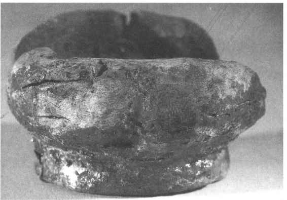

第二十六章
古代髹漆工艺成就

第一节
概 述
中国是世界上最早发现并使用天然漆的国家。经过长期的实践，把漆器制造发展成为一种专门工艺并达到了很高的水平。
现知最早的漆器是1978年在浙江省的六七千年前河姆渡遗址中发现的木胎朱漆碗。（图26—1）不过从单纯使用天然漆到用色料调漆，其间还有一个漫长的过程，有待今后我们作进一步的探索。商周时代已用色漆和雕刻来装饰器物，并以松石、螺钿、蚌泡等作镶嵌花纹。战国在漆工史上是一个极为重要的时期，器物品种和髹（指把漆涂在器物上）饰技法等都有很大的发展。汉代漆器产地之广、数量之多、传播之远是前所未有的。器物的造型及装饰也呈现新的面貌。魏晋南北朝漆器发掘出土的虽不多，唯据历史文献可知当时花色颇繁，制作亦精。体大质轻的夹纻（指用苎麻织成的粗布）像，油漆兼用的密陀绘具有时代的特色。唐代文明高跻当时世界之巅，漆器和其他工艺一样有特殊的成就。它表现在起源于前代的金银平脱至此而愈加华美，盛行于后代的剔红、犀皮等又始创于斯时（据安徽马鞍山朱然墓发现的漆器，三国吴已有犀皮）。宋代一向以一色漆器制作精良为世所称，而近年来又发现有极为精美纹饰的堆漆与镶嵌、戗金与填漆相结合的漆器更呈异彩。元代漆工名匠辈出，尤以剔红、剔犀、戗金诸作，达到了历史的顶峰。明代是我国漆工史上又一次有重大发展和革新的时代，髹饰工艺可谓至此而大备。多种技法和不同纹、地的结合，迎来了千文万华之盛。清代前半叶大规模地任用了明代髹工，由于宫廷的好尚，更趋精工细巧而不免流于纤密繁琐。中叶以后，国运日蹙，导致各种工艺的全面衰退。

图26-1 河姆渡遗址朱漆木碗
总的说来，我国漆工艺几千年的发展和成就，对全世界的漆器工艺都产生了影响，先是东亚、东南亚，继而是西欧及北美。可以说世界上一切制造漆器或用其他物质摹仿漆器的国家，无不或多或少受中国漆器的影响。中国传统漆工艺曾经为人类文明作出了重大的贡献。
中国历史上有关髹工、漆器的著作，为数不多，且大都散佚失传。现存唯一的古代漆工专著是明代黄成撰的《髹饰录》。［1］它是研究漆工史、明代漆工的原料和技法的最为重要的文献，使我们认识和了解祖国漆器的丰富多彩，为继承发扬、推陈出新这一工艺提供了宝贵材料。它还为古代漆器的定名及分类提供了可靠的依据。《髹饰录》对漆器的分类如下：
1．质色门 即各种一色漆器。
2．纹门 即表面有不平细纹的各种漆器。
3．罩明门 即在各色漆地上罩透明漆的各种漆器。
4．描饰门 即用漆或油描绘花纹的各种漆器。
5．填嵌门 即填漆、嵌螺钿、嵌金银等各种漆器。
6．阳识门 即用漆堆出花纹的各种漆器。
7．堆起门 即用漆灰堆出花纹，上面再加雕琢、描绘的各种漆器。
8．雕镂门 即各种雕漆，包括剔红、剔犀等及假雕漆、雕螺钿等各种漆器。
10．斓门 即两种或两种以上纹饰相结合的各种漆器。
11．复饰门 即某种漆地与一种或多种文饰相结合的各种漆器。
12．纹间门 即填嵌门中的某种做法与戗划门中的某种做法相结合的各种漆器。
最后是裹衣门和单素门，讲的是两种用简易方法做胎骨的漆器。
本文所用的漆器名称及分类主要以《髹饰录》为依据。由于明、清两代传世的漆器实物较多，在分类时作了适当的归纳、调整和变通。这是因为黄成全凭漆器的制作方法及花色形态来分类，而并未考虑各种漆器存留的实际情况。这样就必然出现有的门类实物甚多，有的门类又实物极少以至举不出实例来。现在为了符合古代漆器存留的实际情况，拟分为十四类，详见第三节。